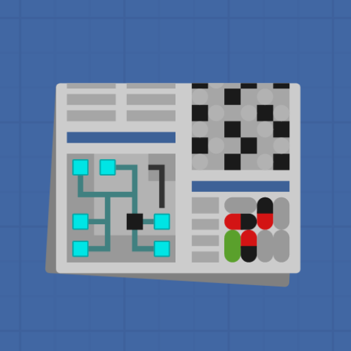

This is a database of all currently known published results (to my knowledge) about the computational complexity of grid-based pencil-and-paper Nikoli-style logic puzzles.
If you know of any papers missing from this collection, please let me know!
Here is a brief explanation of this website's iconography.

tatham: Simon Tatham's Portable Puzzle CollectionTo filter the table, you can click on the controls at the top of the screen. Here is a brief explanation of each control: